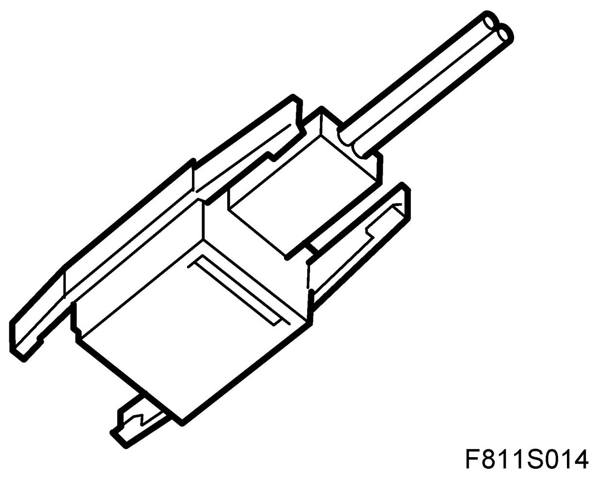
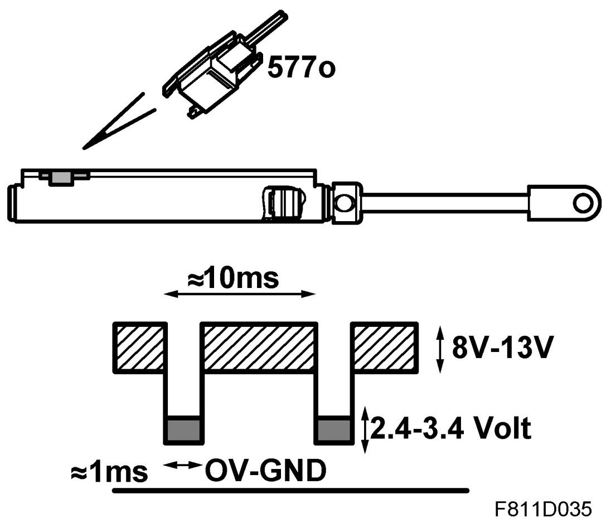
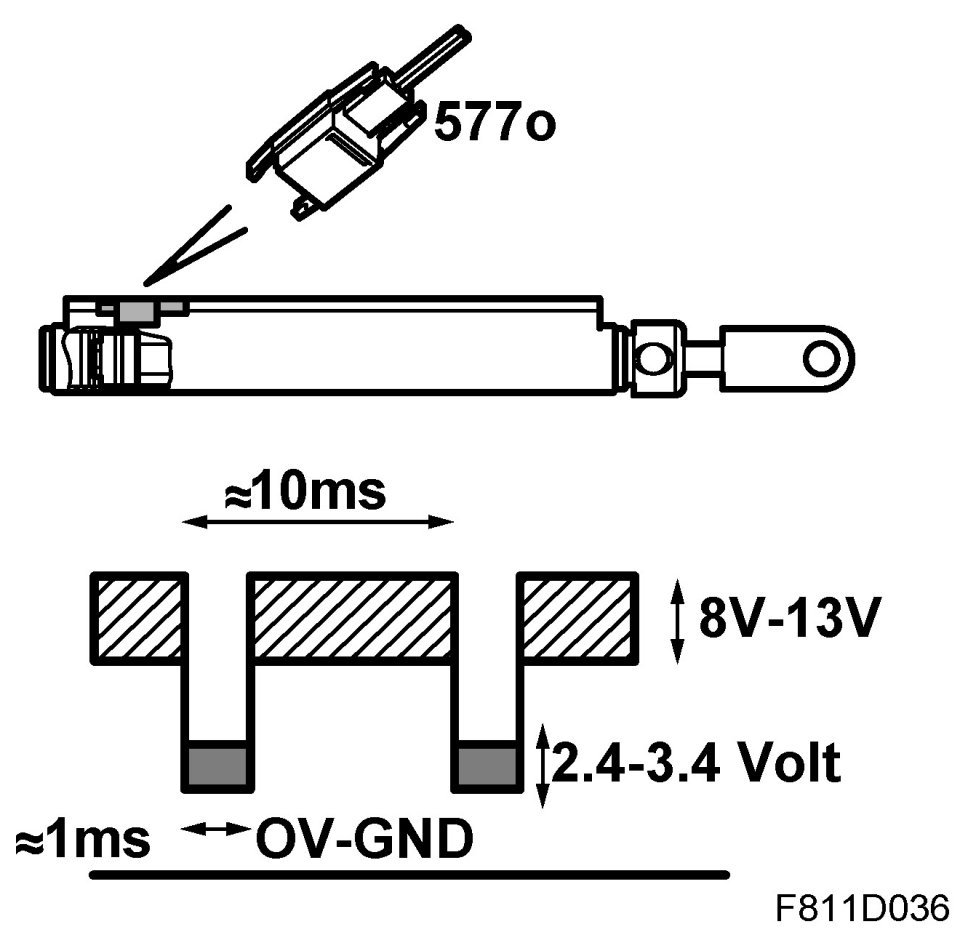
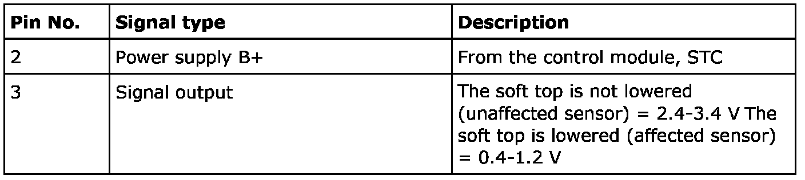
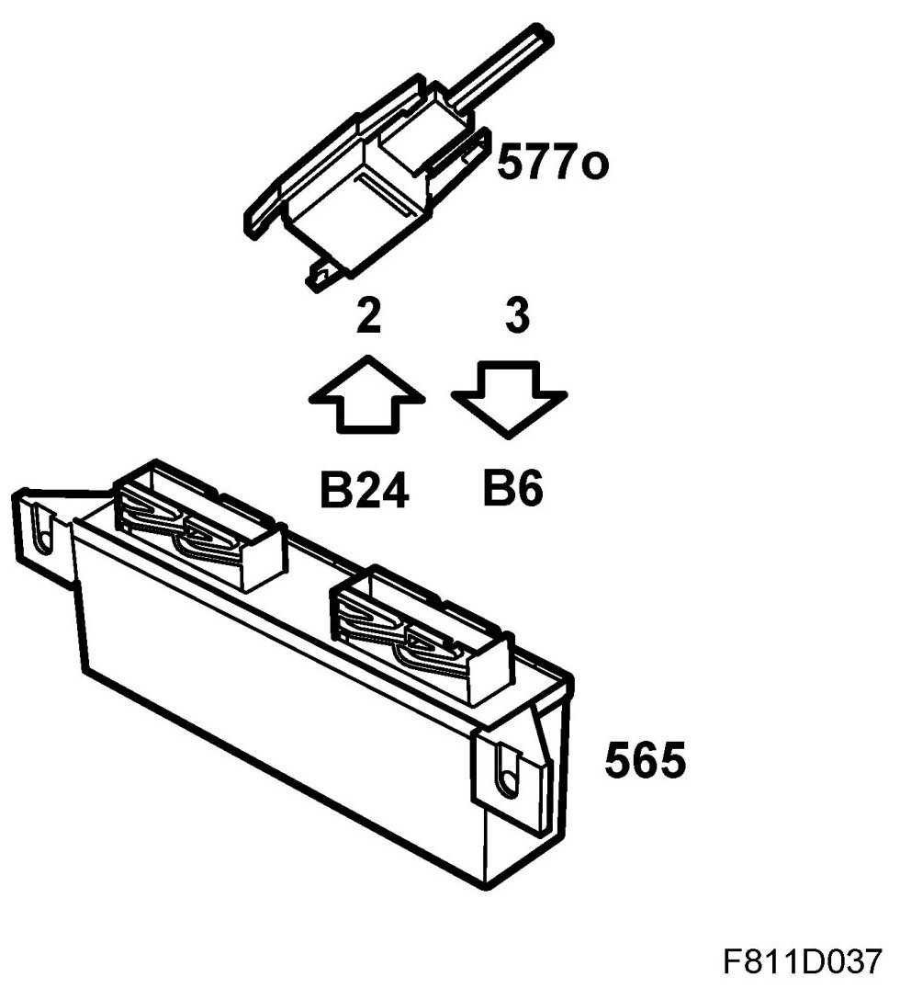
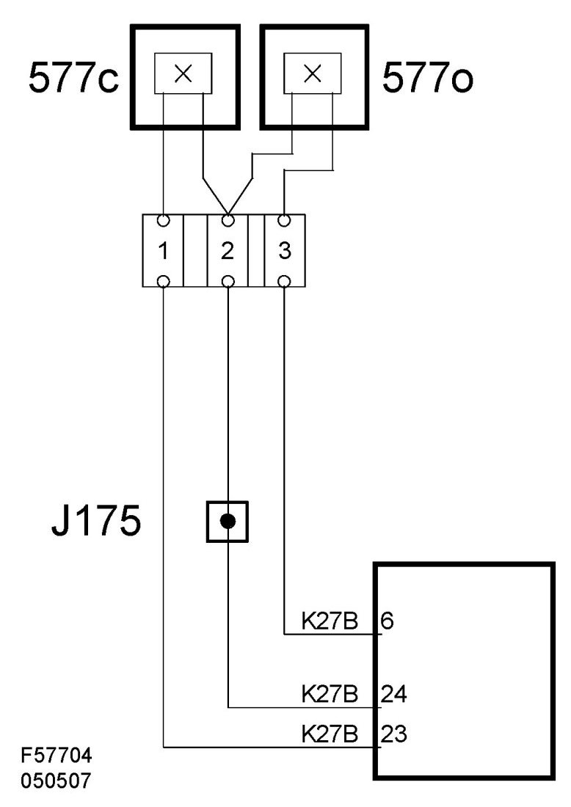

Position Sensor, Soft Top Lowered (577o)
Position Sensor, Soft Top Lowered (577o)
Location
Position sensor, soft top lowered (577o)

Main task
The sensor gives information to the STC control module indicating if the soft top is lowered.
Lowered

Raised

Type
Hall sensor with inbuilt magnet.
Technical data
Connection


The sensor is connected to the STC control module with two leads. The sensor is energized with B+ on pin 2 and gives information to the STC control module on pin 3.
The sensor is affected by the cylinder piston. The sensor is affected when the piston is in its innermost position and the soft top is lowered.
Diagram
